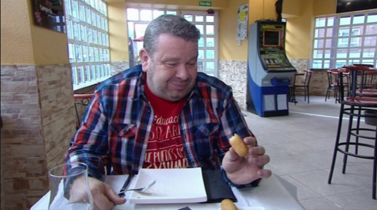
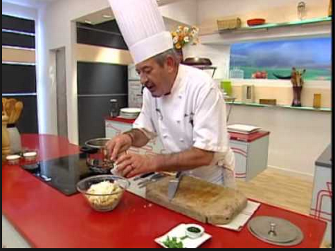

Croquetas caseras de jamón
Información práctica
- Media
- 60 Minutos
- Para 10 personas
- 0.5€/persona
- 261kcal por 100g

Ingredientes
- 1⁄2 l. de leche entera
- 200 ml de caldo de cocido o carne
- 1 cebolla mediana
- 250 gr de jamón serrano picado finamente
- 1 cucharada de mantequilla
- 2 cucharadas de aceite de oliva virgen extra
- 5 cucharadas de harina
- 1 cucharada de almidón de maíz
- Sal y nuez moscada (al gusto)
- Pan rallado y 2 huevos para rebozar las croquetas
- Aceite de oliva virgen extra (fritura)
Descripción
Cómo preparar unas croquetas de jamón. El mejor consejo para hacer unas croquetas de campeonato es "tener paciencia y una muñeca potente para remover".
Esta receta de aperitivo que os propongo es la que hemos comido en casa siempre.
Mi abuela, una de las mejores cocineras que haya
conocido, tenía varias especialidades, entre las que destacaban las croquetas y la leche frita. Hoy cocinamos "croquetas de jamón",
receta de mi abuela.
Aunque se trata de un plato de aprovechamiento, es decir, para dar uso a las sobras, su origen es mucho más exquisito. De hecho, en la
actualidad los grandes cocineros lo utilizan para dar forma a muchas de sus genialidades culinarias. Allá por el año 1690, en tierras
francesas, el cocinero de Luis XIV dejó constancia de esta receta, que combinaba trufa, mollejas y crema de queso, "la croquette".
Quizás hablar de las mejores croquetas es como hacerlo de la mejor tortilla de patata. No voy a presentaros una receta de la mejor
croqueta de jamón que hayáis probado nunca. Una única y universal, está claro que esta es mi receta, la de casa que me enseñó mi
madre. Yo sólo aporto una más y espero que os gusten.
Esta es después de varios años una croqueta equilibrada, una bechamel suave para una masa suave y sabrosa y terminar con un
rebozado crujiente. Si queréis aportar vuestro punto de vista, no dejéis de enviarme un mail, iremos mejorando la receta entre todos,
unas croquetas de rechupete.

Pasos para la preparación
Preparación de la base de las croquetas de jamón
- Picamos la cebolla muy pequeña (o pasamos por la picadora). El objetivo es que casi no se note al morder, aunque si os gusta con tropezones de jamón, no piquéis el jamón, cortadlo a mano muy fno. Reservamos.
- Picamos el jamón o si lo preferís podéis comprar jamón serrano en virutas. Reservamos.
- En una sartén grande, ponemos una cucharada colmada de mantequilla y dos cucharadas colmadas de aceite de oliva virgen extra.
Añadimos la cebolla y la ponemos a pochar a fuego muy bajo.
- A continuación añadimos el jamón picado y rehogamos 1 minuto o dos, hasta que se integren bien los ingredientes.
- Continuamos con el fuego bajo (3 o 4 de mi inducción) y añadimos la harina para tostarla, removiendo sin parar para que no se
queme.
- Inmediatamente después vertemos, poco a poco, la leche sin dejar de remover. Disolvemos la Maizena con el caldo y lo agregamos a
la bechamel. Si no quieres añadir caldo de cocido, incrementad la cantidad de leche en la misma proporción.
- Seguimos removiendo y añadimos una pizca de nuez moscada. Yo le añado pizca y media, porque me gusta mucho esta especia y un
poco de sal al gusto (cuidado que el jamón ya es muy salado).
- Cuando la masa se despegue de los laterales de la sartén, la pasamos a una fuente grande y dejamos que se enfríe.
- Para que la masa quede bien, hay que tener paciencia y remover mucho tiempo. Hasta que se despegue de los bordes al pasar el
cucharón.
Rebozado y fritura de las croquetas de jamón
- Una vez fría tapamos la fuente con flm y la dejamos en la nevera hasta el día siguiente (24 horas aproximadamente). Es importante
que no pongáis el flm inmediatamente. Para evitar que salgan gotas por el calor y el vapor.
- Pasadas las 24 horas, comenzamos a dar forma a las croquetas, este es quizás mi secreto, el reposo, así la masa quedará más
consistente al rebozar.
- Si tenéis mucha prisa o son para el mismo día. Podéis emplear el congelador para que enfríen rápido y sean más sencillas a la hora de
manipular.
- Batimos dos huevos en un plato hondo y ponemos abundante pan rallado en un plato liso. Preparamos en boles los ingredientes para
el rebozado, los huevos batidos y el pan rallado.
- Formamos la forma deseada para las croquetas, en casa nos ayudamos de una cuchara. Para bolear las croquetas con la mano, lo
mejor es untarlas con un poquito de aceite para que no se nos pegue la masa.
- Cogemos una porción de masa y le damos la forma deseada. Alargadas o en forma de bolitas y las pasamos, inicialmente por pan
rallado.
- Sumergimos cada bolita de croqueta en el huevo batido y luego, bien escurridas. Las rebozamos con el pan rallado.
- Para conseguir una corteza exterior bien crujiente o aconsejo que repitáis la operación bañando cada croqueta de nuevo en huevo y
pasándola por segunda vez por el pan rallado.
- Calentamos en una sartén honda una buena cantidad de aceite suave para freír y, una vez caliente vamos friendo las croquetas.
- Tenemos que tener la precaución de ir bañando las croquetas con el aceite por su cara superior mientras se van friendo. Así
evitaremos que se nos abran y les salga el relleno.
- Reservamos sobre un papel absorbente, y así quitaremos el sobrante de aceite.
Una manera deliciosa de compartir la comida con los amigos y la gente a la que queréis. Podéis ver todas las fotos del paso a paso en
este álbum de receta de croqueta casera de jamón
Una manera deliciosa de compartir la comida con los amigos y la gente a la que queréis. Podéis ver todas las fotos del paso a paso en
este álbum de receta de croqueta casera de jamón
Consejos y recomendaciones
Consejos y recomendaciones para unas croquetas de jamón perfectas
- Con las cantidades que os he puesto al principio. Os saldrán unas 20 croquetas, en función del tamaño que les deis. Si duplicáis la
medida, podéis congelar unas cuantas (siempre sin freír) y así las tendréis disponibles para cualquier día.
- Si no vais a hacer todas, preparad tuppers y al congelador. Para congelar las croquetas, colócalas en una fuente (sin amontonar).
Mételas en el congelador y al cabo de 12 horas cuando estén como piedras, sepáralas y consérvalas en una bolsa de plástico limpia y
cerrada.
- Para freírlas no es necesario descongelarlas. Se fríen en aceite muy caliente durante 2 minutos moviendo la sartén en vaivén para no
tener que tocarlas.
- Si no disponemos de freidora, lo mejor es hacerlas en tandas de cuatro o cinco cada vez. Si tenemos freidora las croquetas quedarán
sumergidas en su totalidad dentro del aceite.
- Estas croquetas de jamón son un bocadito de cielo, un auténtico capricho, ideales tanto para un entrante de festa, como para un
picoteo informal en casa. Un bocado de rechupete.
- Os animo a que visitéis más recetas de tapas, aperitivos y pinchos perfectos para una velada inolvidable con los vuestros.
- Perfectas para una cena ligera, una festa o porque sí.